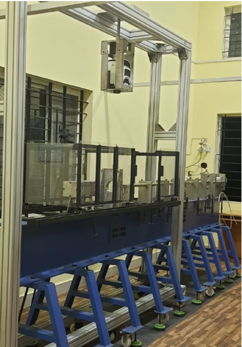
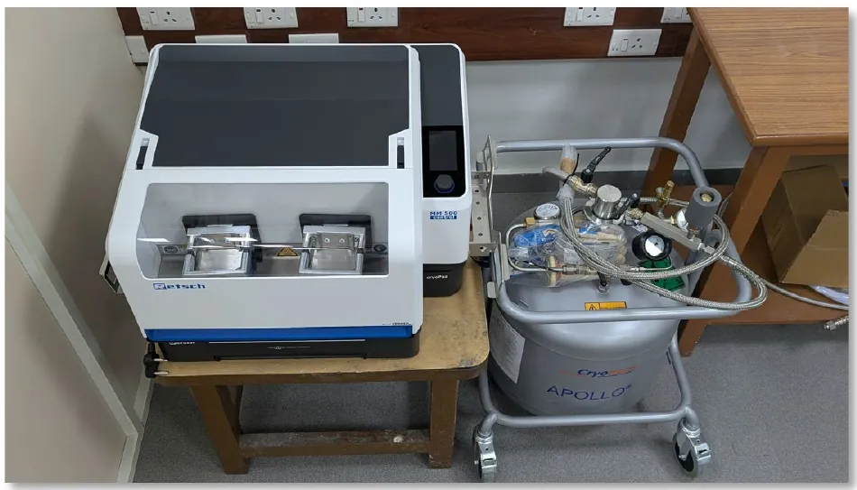

Terminal ballistics and high strain rate testing lab
- Split Hopkinson pressure bar for strain rates up to 10,000 s−1 and temperatures up to 750 °C, with maraging steel and magnesium for high-strength metals and alloys, as well as polymers, light metals and metal foams.
- Ballistic impact facility firing projectiles up to Mach 3, for studying the response of both projectile and target.
- High-speed imaging up to one million frames per second, synchronized with high-speed data acquisition.
- Ballistic hot-erosion rig. A water-droplet erosion tester is under construction.

Creep
- Two creep machines, one for tension and one for compression, up to 1000 °C. These are housed in the Centre of Excellence for High Temperature Materials Research.
Processing
- High-temperature diffusion bonding press for metal–intermetallic laminates, and several furnaces for heat treatment.
- High-energy cryogenic ball mill for fine-grained and nanostructured powders by mechanical alloying.
- Electrochemical hydrogen-charging set-up is being put together.

Characterization
- We have sample preparation facilities for microstructural examination: slow-speed sectioning, grinding, polishing, electropolishing and twin-jet polishing.
- An oxygen–nitrogen–hydrogen (ONH) analyser is being procured to measure hydrogen in charged samples.
Computing
- Shared-memory multi-core servers in the group’s own rack.
- Software: VASP (DFT), LAMMPS (molecular dynamics), MICRESS (phase-field), Thermo-Calc and DICTRA (thermodynamics and kinetics) and LS-DYNA (finite elements).